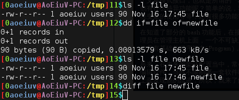

dd if=file of=newfile

dd是很强大的东西，但它做的是很简单的工作，就是读+写，从if=后面的文件读，写入of=后面的文件，由于Linux下，一切皆文件，这才强大，主要用来处理些不正常的文件，比如块设备文件，或者说，代表硬盘分区的文件，主要是这个dd可以比较方便的表示块，参数bs表示块大小，count表示块数目，这样就可以精确的写入bs*count这么多字节的数字，还可以方便的表示读入时跳过的字符数,skip,还有写入时起始的偏移量(offset),seek。
dd if=/dev/zero of=/dev/sda count=1 bs=512
手写没运行，用0覆盖硬盘sda的前512字节，也就是第一个扇区，也就是分区表。